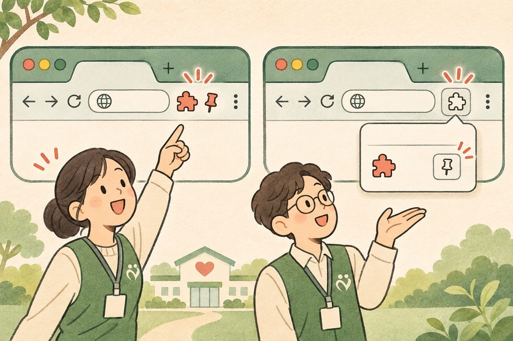
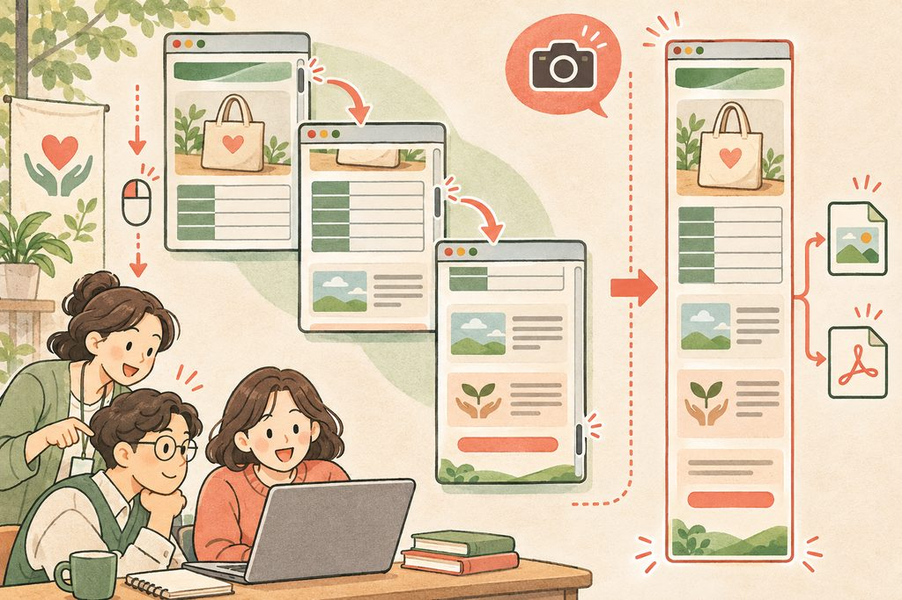
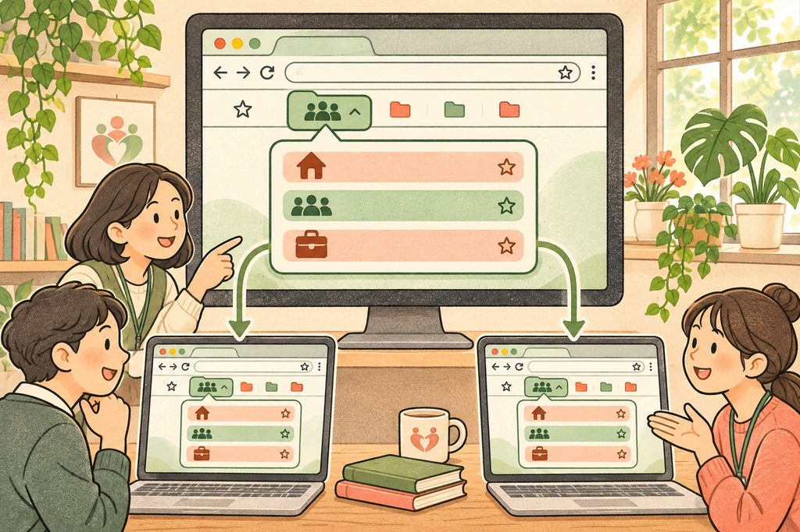
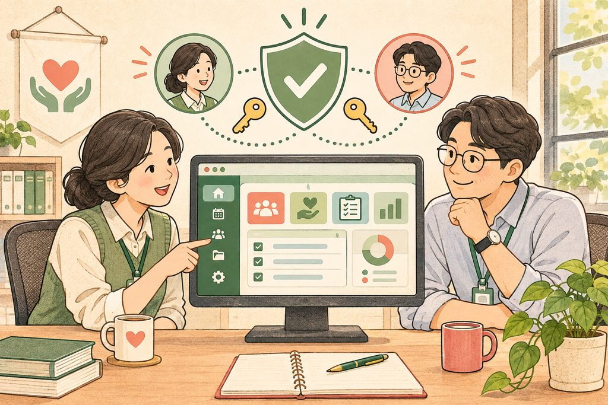

설치는 한 번, 업무는 함께.
같은 도구를 쓰면, 서로 돕기도 한결 쉬워집니다.
직원 한 분 한 분이 크롬 웹 스토어에서 프로그램을 찾아 설치하면 시간이 걸립니다. 누군가는 설치하고, 누군가는 설치하지 못해 업무 환경도 달라집니다. 관리자가 관리 콘솔에서 클릭 몇 번으로 배포하면, 기관 계정으로 크롬에 로그인한 직원 모두에게 같은 프로그램이 설치됩니다.
설치 여부와 사용 환경이 달라집니다.
강의에서는 저장 후 약 10~30초 뒤 설치 알림을 확인했습니다.
관리 콘솔에서, 이 순서대로.
아래 단계나 ‘다음 단계’를 눌러 설치 경로를 따라가 보세요.
관리 콘솔의 사용자 및 브라우저에서 확장 프로그램을 추가하고 설치 정책을 정한 뒤 저장합니다. 마지막 저장까지 마쳐야 직원 크롬에 배포됩니다.
관리 콘솔을 열어 주세요
기관의 관리자 계정으로 관리 콘솔에 로그인합니다. 이곳에서 직원들이 사용하는 크롬의 설정을 관리합니다.
학습용 따라가기입니다. 실제 관리 콘솔의 설정은 변경되지 않습니다.
설치는 같아도, 보이는 곳은 다릅니다.
직원이 꼭 보아야 할 도구인지, 필요할 때 꺼내 쓸 도구인지 생각해 보세요.
두 정책 모두 관리자에 의해 확장 프로그램이 설치됩니다. 차이는 도구 모음에 아이콘을 계속 고정할지입니다. 아래 두 정책을 번갈아 눌러 비교해 보세요.

항상 눈에 보이는, 기관의 필수 도구
- 설치
- 자동으로 설치됩니다
- 아이콘 위치
- 도구 모음에 항상 표시
- 직원의 고정 해제
- 해제할 수 없습니다
모두가 꼭 써야 하는 도구에 알맞습니다. 직원이 아이콘을 도구 모음에서 끌 수 없도록 고정합니다.
설치해 두고, 필요할 때 꺼내 쓰는 도구
- 설치
- 자동으로 설치됩니다
- 아이콘 위치
- 퍼즐 모양 메뉴에서 확인
- 직원의 고정 해제
- 고정·해제를 선택합니다
확장 프로그램은 설치되지만 퍼즐 모양의 ‘확장 프로그램 주머니’ 안에서 찾습니다. 직원이 핀을 눌러 도구 모음에 꺼내 쓸 수 있습니다.
긴 웹 페이지를, 한 장의 기록으로.
전체 화면 캡처 도구를 강제 설치하는 예시를 떠올려 보세요.
긴 웹 페이지를 끝까지 내려가며 한 장으로 이어 붙여 캡처하는 확장 프로그램입니다. 화면에 보이는 부분만 잘라 찍는 대신, 페이지 전체를 기록할 때 유용합니다.
캡처 결과는 PDF·이미지로 내려받거나, 오른쪽 버튼을 눌러 이미지를 복사할 수 있습니다. 한글 파일을 크롬에서 여는 확장 프로그램도 앞에서 배운 같은 방법으로 설치하실 수 있습니다.

원리를 보여 주는 체험이며, 실제 화면을 캡처하거나 내려받지는 않습니다.
자주 찾는 주소도, 함께 나누세요.
직원 크롬의 북마크바에 기관 공용 폴더를 만들어 보세요.
관리 콘솔의 크롬 설정 → 관리 북마크에 기관 홈페이지, 기관 카페, 자주 쓰는 업무 사이트 주소를 넣습니다. 그러면 직원 크롬 북마크바에 같은 폴더가 생깁니다. 새 탭이나 홈 버튼을 눌렀을 때 기관 페이지가 뜨도록 설정할 수도 있습니다.

▰ 기관 공용 링크 — 눌러서 펼쳐 보세요
- ⌂ 기관 홈페이지
- ♧ 기관 카페
- ▣ 자주 쓰는 업무 사이트
관리 권한도, 책임 있게 함께.
편리한 배포와 함께 꼭 확인할 보안 설정입니다.
최고 관리자가 한 명뿐이면 그분이 자리를 비우거나 계정에 문제가 생겼을 때 기관 전체의 관리가 어려워집니다. 그렇다고 팀장 모두를 최고 관리자로 지정하지는 마세요. 책임지고 공부하며 관리할 두 명 이상을 정해 주세요.
- 2단계 인증은 전 직원에게관리자뿐 아니라 전 직원이 사용하도록 챙겨 주세요.
- 최고 관리자는 책임질 수 있는 분으로권한과 함께 관리 업무와 책임을 나눠 주세요.
- 외부 권한은 업무 종료 후 회수외부 강사·업체의 관리자 권한을 일이 끝나면 회수해 주세요.

주의 · 한 분에게 관리가 집중되어 있습니다
부재나 계정 문제에 대비하기 어렵습니다. 책임지고 관리할 수 있는 분을 추가해 두 명 이상으로 정리해 주세요.
인원수에 따른 학습용 안내입니다. 두 명 이상이어도 역할과 권한을 함께 점검해야 합니다.
세 문제로, 기억을 단단하게.
하나씩 고른 뒤 정답을 확인해 보세요. 해설을 읽고 다시 풀어 보셔도 좋습니다.
오늘, 세 가지만 해 보세요.
우리 기관의 환경을 정리하고, 완료한 과제에 체크해 주세요.
오늘의 과제
0 / 3 완료체크한 내용은 이 브라우저에만 저장됩니다.
한 가지씩 적용하면, 우리 기관의 내일이 조금 더 편해집니다.